Imagine saber todos os caminhos possíveis entre dois pontos de um grafo, e saber qual o menor caminho entre eles. Esse é o problema dos menores caminhos, e o algoritmo de Floyd-Warshall é uma solução para esse problema.
“Com as menores distâncias, podemos passar de uma configuração para outra o mais rapidamente possível!”
Grafos com Pesos
Neste handout vamos apresentar diversos grafos com pesos, e é importante, antes de começar, entender o que são esses pesos, para que servem e como impactam o problema. Para isso existem alguns cenários muito importantes:
Peso entre dois nodos.
O peso entre dois nós é calculado a partir da complexidade de se viajar de um nó para o outro. Abaixo temos um exemplo figurativo da complexidade/dificuldade que esses pesos representam.
Imagine que você queira conectar dois pontos, A e B. Para isso, escolhe o caminho mais rápido e simples, que não tem nenhum obstáculo. Você traça uma linha reta, e esse caminho terá peso 1.
Caso existam obstáculos no meio do caminho, como pedras, vulcões, cavernas… você terá que desviar deles e, portanto, o caminho terá um peso maior que 1. Nesse caso, escolhemos 5 como peso.
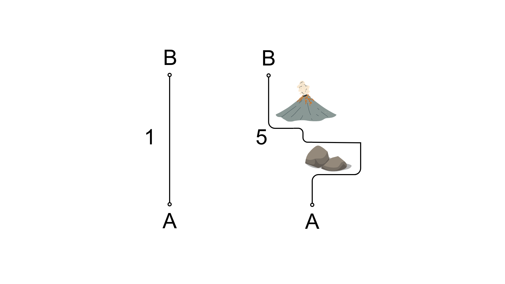
Tudo bem que tudo isso é no mundo figurativo, na realidade esses pesos podem representar muito mais do que meros obstáculos, podem ser a distância em KM entre dois pontos, a quantidade de combustível gasto, o tempo de percurso, entre diversos outros pontos que não serão discutidos ou levados em consideração quando falarmos de pesos.
Pesos infinitos
E se não houver um caminho entre dois nodos? Como representar isso? Para isso, utilizamos o conceito de infinito, que representa algo tão grande que não é possível alcançar. Portanto, se não existe um caminho entre dois nodos, o peso é infinito.
Imagine que você gostaria de ir de São Paulo a Ilha Bela, porém, não existe uma ponte que liga os dois pois existe um rio no meio do caminho. O peso entre São Paulo e Ilha Bela é infinito.
Isso significa que é impossível ir de São Paulo a Ilha Bela? Claro que não! Precisamos de uma balsa. Ou seja, precisamos de um intermediario para chegar em Ilha Bela. Nosso algoritmo irá encontrar este intermediario e atualizar o “infinito” para o peso real do caminho, que é o peso de São Paulo até a balsa + o peso da balsa até Ilha Bela.
De maneira análoga, se quisermos ir de São Paulo até São Paulo, o peso é 0, pois não precisamos sair de São Paulo para chegar em São Paulo. O peso de um vértice para ele mesmo é sempre 0.
Grafos como Matrizes
Este é um exemplo de grafo muito utilizado, existem 3 nodos que estão conectados por caminhos com pesos diferentes. O nosso computador, porém, não têm a capacidade de receber como input este grafo, ele têm que ser guardado em um formato de dados que represente todos os nodos e seus pesos.
Este formato pode ir desde listas, pilhas, filas… porém nenhum destes modelos consegue representar todas as possibilidades de expansão de um grafo, por isso, o modelo mais utilizado é o de Matrizes.
Mas como que uma matriz pode representar um grafo? Para isso existem regras de construção:
A matriz deve ser quadrada, ou seja, o número de linhas deve ser igual ao número de colunas.
A distância/peso de um Node para ele mesmo é igual a 0.
Se existe uma aresta entre dois Nodes, o peso é igual ao peso da aresta.
Dica: Construa a Matriz das linhas para as colunas. Então se estiver na linha A e coluna B, ou seja, MATRIZ[A][B], essa posição é preenchida com a distância saindo de A e indo para B. Resumindo, você sai pelas linhas e chega pelas colunas !
Checkpoint
Qual a matriz de pesos do Grafo abaixo?
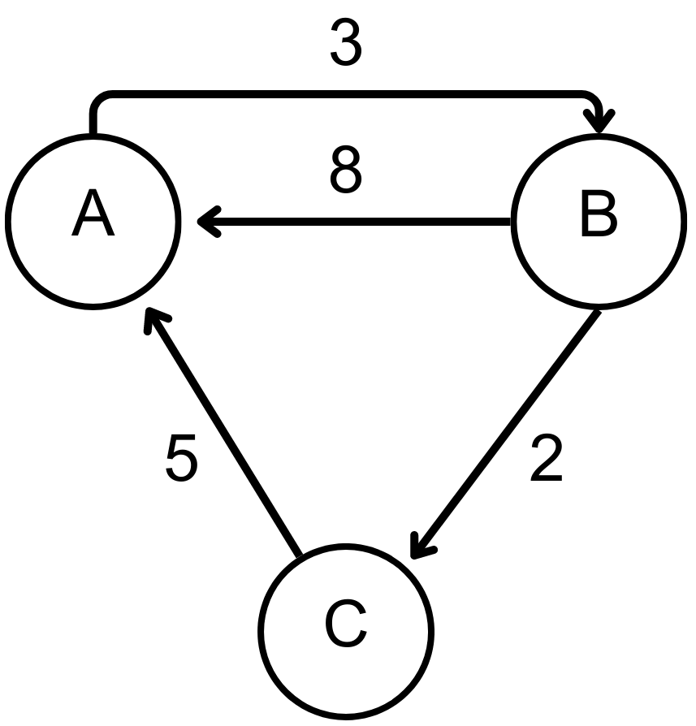Gabarito
Se conseguiu completar corretamente, quer dizer que já entendeu os objetivos, e pode seguir para o próximo Checkpoint. Se não compreendeu é importante ler as regras novamente e ver se ao construir sua Matriz seguiu todas elas.
Com todos os pesos dos nodos em uma matriz podemos encontrar o caminho de menor peso entre dois nodos.
Checkpoint
Qual o menor caminho entre o Nodo A e B?
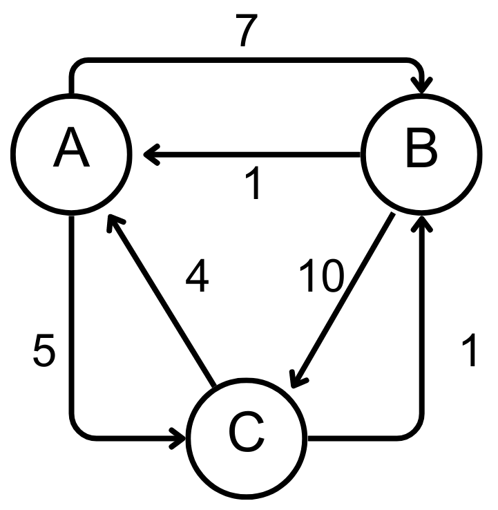Gabarito
O menor caminho entre A e B é ir pelo nodo C que têm peso 5, e depois de C chegar em B, tendo um peso total de 6 - contra o caminho convencional de 7.
Checkpoint
Qual o menor caminho entre o nodo B e C?
Gabarito
O menor caminho entre B e C é ir pelo nodo A que têm peso 5 e depois ir para o nodo C com um peso total de 6 - contra o caminho convencional de 10.
Você deve estar achando o problema muito fácil, basta analisarmos os nodos e seus pesos e encontrarmos o caminho com menor peso. Porém, perceba que estamos apenas buscando pesos entre dois nodos de um Grafo com 3 nodos. Se aumentarmos o tamanho do problema e pedirmos para encontrar todos os menores caminhos em todos os nodos consumirá mais tempo.
Checkpoint
Qual o menor caminho entre todos os nodos, isto é, o menor caminho saindo de cada nó e chegando nos demais ?
OBS: Não gaste mais do que 1 minuto nesse Checkpoint!
Gabarito
Tenho certeza que você nem tentou resolver e já abriu o gabarito. Mas tudo bem, não esperamos que você resolva este Checkpoint, se quiser algo realmente dificil, desça até os desafios.
Você deve ter percebido que é extremamente trabalhoso encontrar o menor caminho para cada um dos casos, e conforme o grafo se torna mais complexo, se torna mais dificil encontrar. Por isso, o algoritmo de Floyd-Warshall foi criado, para encontrar todos os menores caminhos de um grafo de forma eficiente - e entregar a resposta em uma matriz de mesmo tamanho que a inicial.
O que é o Algoritmo Floyd-Warshall
Floyd-Warshall é um algoritmo que utiliza de programação dinâmica para encontrar todos os caminhos entre todos os Nodos de um Grafo/Matriz, dos encontrados seleciona os menores e guarda eles em uma Matriz de mesma dimensão da inicial.
Então vamos construir o pensamento do algoritmo aos poucos, ok ?
Primeiro, vamos analisar o grafo abaixo:
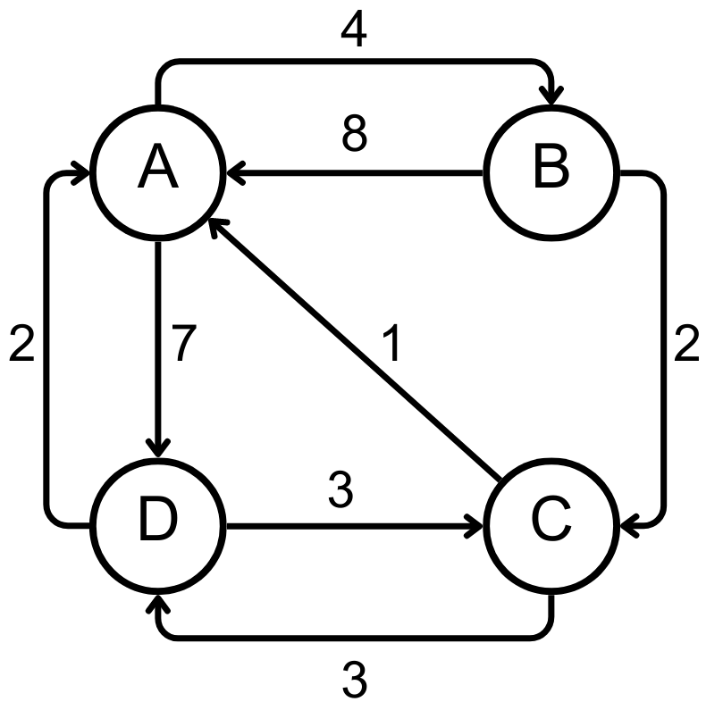
Como você aprendeu anteriormente, a matriz para este gráfo é a seguinte:
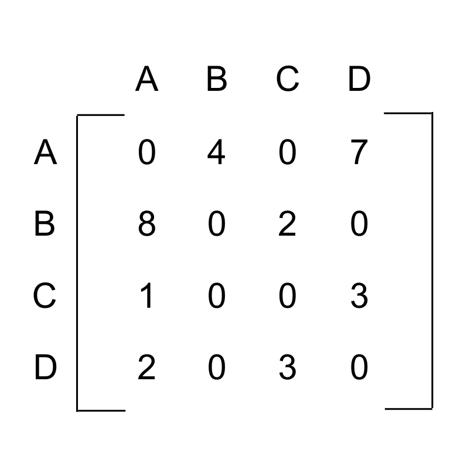
Essa matriz representa todos os caminhos possíveis entre os nodos, e como podemos ver, alguns deles não existem. Como discutido, precisamos por um valor para eles, algo que represente essa impossíbilidade. Algo impossível de alcançar remete a algo grande, ou seja, infinito. Portanto, ao se deparar com um caminho inexistente, colocaremos o valor infinito.
Nessse ponto, sem considerar nenhum nó intermediario, é a melhor maneira de sair de um nodo e chegar em outro. Porém, se considerarmos um nó intermediario, e agora que começamos a brincar.
Agora vamos considerar este problema:
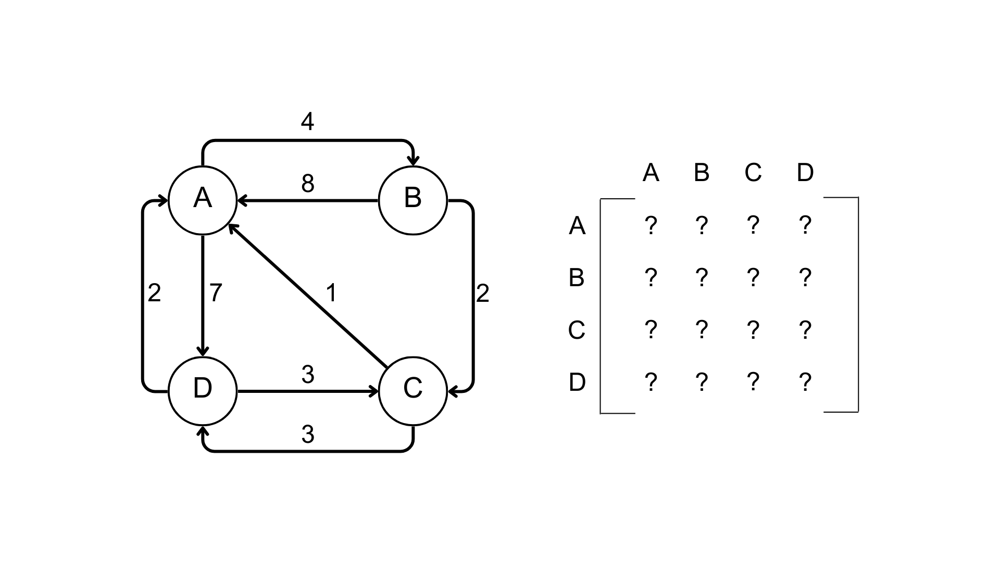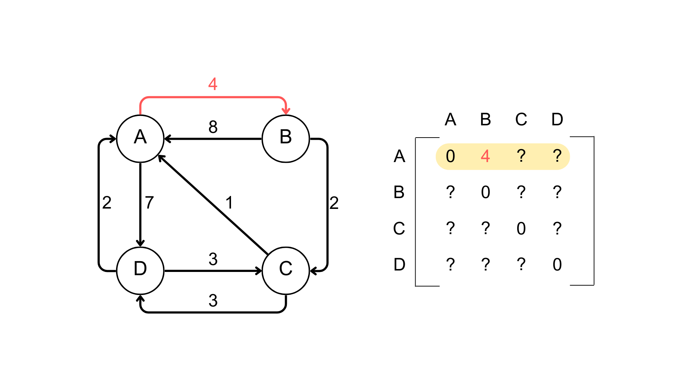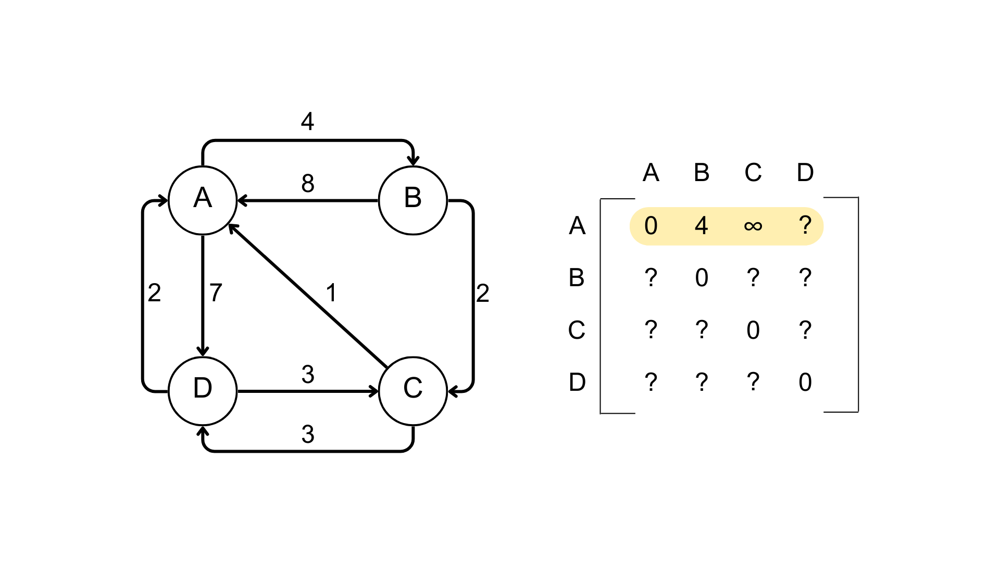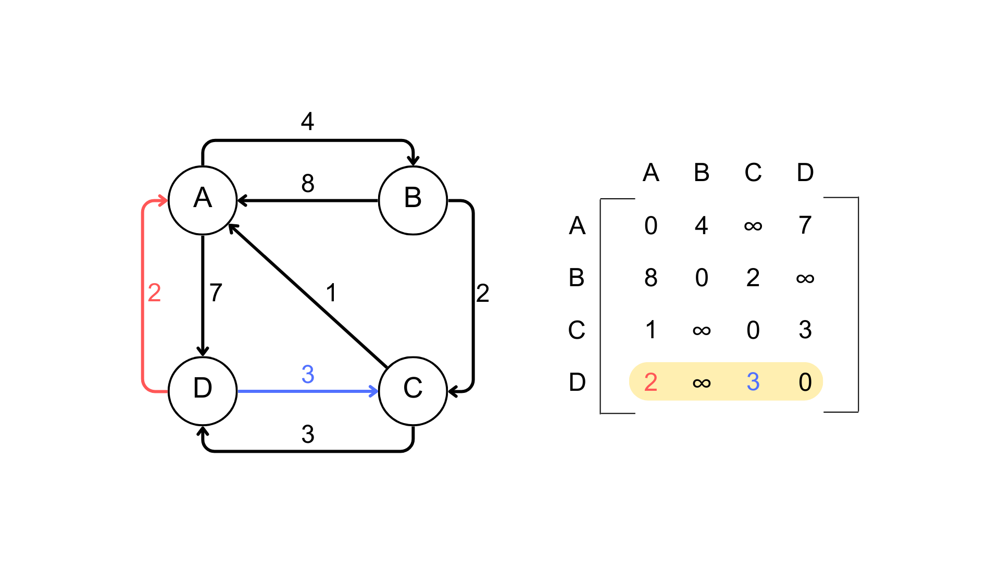
Como você deve ter percebido, o caminho passando por D é mais rápido, e portanto, o caminho de C para A passando por D é o menor caminho.
Mas fazer isso sem uma regra, não vai nos levar a lugar algum, então vamos criar uma regra para isso.
Vamos analisar primeiro o nodo A, como intermediario, depois o nodo B e assim por diante até o último nodo.
Começando pelo nodo A como intermediario, não precisamos checar a linha A e nem a coluna A, pois o nodo A é o nodo de origem do caminho, e portanto, não faz sentido considerar o nodo de origem como intermediario.
Checkpoint
A pergunta que precisamos fazer é:
BC > BA + AC ?
Gabarito
2 > 8 + inf ?
FALSOO, então não mudamos.
Checkpoint
BD > BA + AD ?
Gabarito
inf > 8 + 7 ?
SIM, temos um caminho mais curto, então vamos substituir o valor de BD por 15.
Checkpoint
CB > CA + AB ?
Gabarito
inf > 5 + 3 ?
SIM, temos um caminho mais curto, então vamos substituir o valor de CB por 8.
Checkpoint
CD > CA + AD ?
Gabarito
1 > 5 + 7 ?
FALSO, não mudamos.
Checkpoint
DB > DA + AB ?
Gabarito
inf > 2 + 3 ?
SIM, temos um caminho mais curto, então vamos substituir o valor de DB por 5.
Checkpoint
DC > DA + AC ?
Gabarito
inf > 2 + inf ?
FALSO, não mudamos.
UFAAA, terminamos o nodo A. Isso quer dizer que a matriz que temos representa o menor caminho entre os nodos, considerando apenas o nodo A como intermediario.
Ficou com alguma dúvida ? Mesmo que não, recomendo que veja a seguinte animação que mostra o processo que acabamos de fazer:
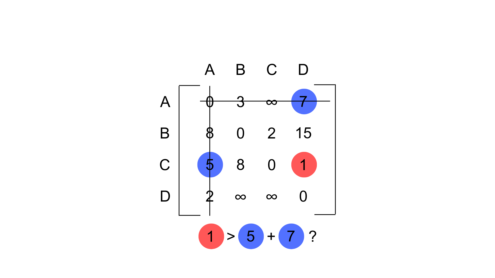
E agora, o que fazemos ?
Agora vamos considerar o nodo B como intermediario, e repetir o processo. E assim por diante, até o último nodo.
Checkpoint
Agora que você viu como funciona, tente terminar para o nodo B.
Gabarito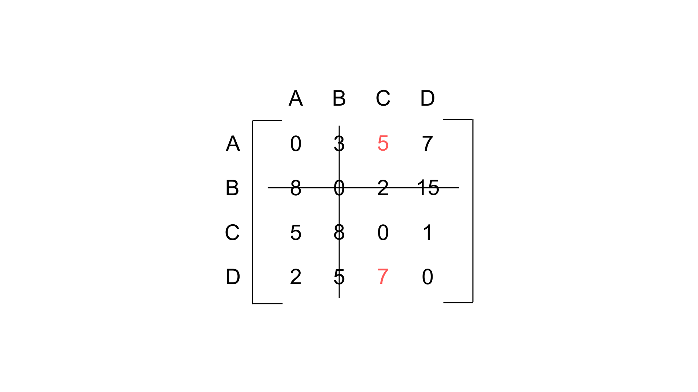
No fim deste passo, temos a matriz que representa o menor caminho entre os nodos, considerando os nodos A e B como intermediarios. Ou seja, temos uma iteração melhor que a anterior, usando as respostas do passo anterior como ponto de partida.
Checkpoint
Tente para o nodo C.
Gabarito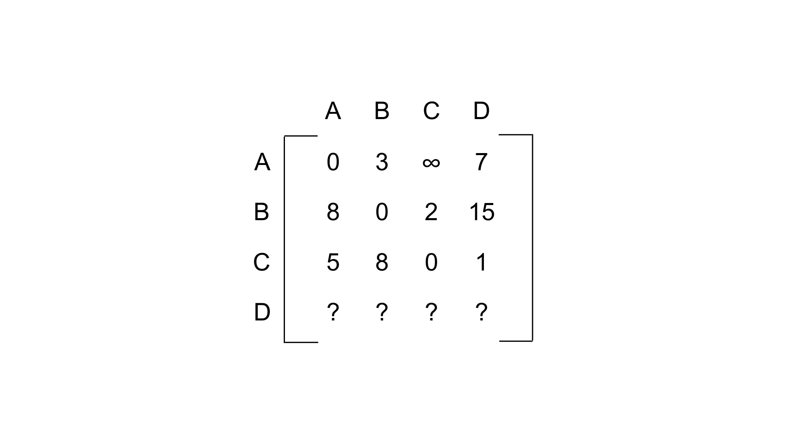
Mais uma vez, temos uma iteração melhor que a anterior, uma vez ques estamos considerando os nodos A, B e C como intermediarios.
Checkpoint
Tente para o nodo D (prometo que é o último).
Gabarito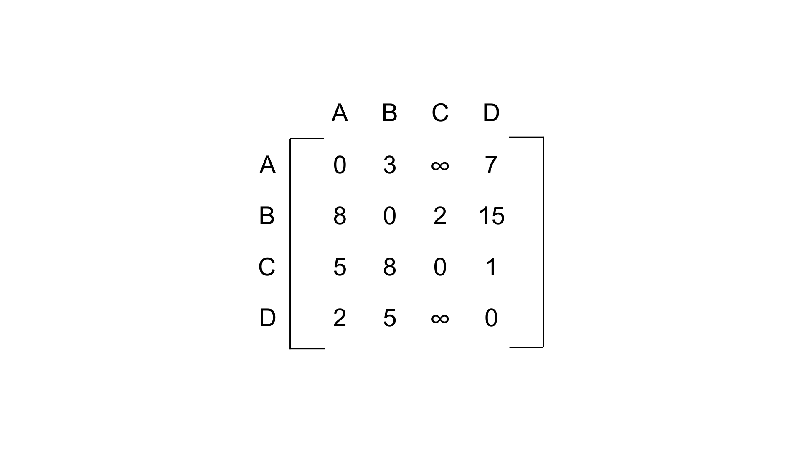
Ufa, deu trabalho né !
A matriz final representa o menor caminho possível entre todos os nodos, considerando todos os nodos como intermediarios. Além disso, a cada passo melhoramos a nossa resposta, sempre considerando a anterior como entrada, e no final temos os menores caminhos possíveis de todos os nodos indo para todos os nodos.
Implementação do Algoritmo
Agora que você já sabe como o algoritmo funciona, e quais são as regras que devem ser seguidas, vamos implementar o algoritmo em C. Ao fazer isso, ela deverá ficar algo como:
int **floydWarshall(int grafo[][], int n) {
int **dist = grafo;
for (int k = 0; k < n; k++) {
for (int i = 0; i < n; i++) {
for (int j = 0; j < n; j++) {
if (dist[i][j] > dist[i][k] + dist[k][j]) {
dist[i][j] = dist[i][k] + dist[k][j];
}
}
}
}
return dist;
}
Nesta implementação é importante manter em mente que a função floydWarshall recebe um matriz - representada por “[ ][ ]”, mas que também pode ser representada por “**” - e o tamanho da matriz, que é representado por n. Devolvendo outra matriz de mesmo tamanho de distâncias.
Checkpoint
Apenas olhando para esse código, você conseguiria dizer qual é a complexidade de tempo desse algoritmo? E a complexidade de espaço?
Gabarito
Como o algoritmo utiliza 3 loops de for para percorrer todos os elementos da matriz, a complexidade de tempo é O(n³).
A complexidade de espaço é O(n²), pois o algoritmo utiliza uma matriz de distâncias de tamanho n². Não cresce mais do que o tamanho da matriz de entrada, pois o algoritmo utiliza a mesma matriz para guardar a matriz de distâncias.
Desafios
Desafio 1 - Google Maps
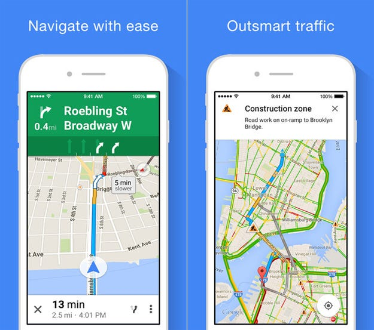
Imagine que você trabalha na equipe de desenvolvimento do Google Maps. Recentemente, o Google tem recebido muitas reclamações de desenvolvedores, muitos dos quais pedem um novo cliente. Portanto, você recebeu a tarefa de implementar o algoritmo de Floyd-Warshall em uma linguagem interpretada, mais flexível do que a atualmente utilizada, para calcular a distância entre todos os pares de pontos de determinadas regiões. Esse algoritmo, entretanto, precisa de uma modificação em relação ao clássico: ele precisa receber como argumento uma segunda matriz que representa o tempo de viagem entre os pontos. A matriz de distâncias deve ser calculada com base na matriz de tempos e não na matriz de adjacência.
Desenvolva uma função floydWarshall, que recebe como argumentos uma matriz de adjacência grafo e o número de vértices n, e retorna a matriz de distâncias dist, com a modificação pedida.
Dica: Parta do código em C apresentado anteriormente.
Gabarito
def floydWarshall(grafo, n, tempos):
dist = [[float('inf') if i != j else 0 for j in range(n)] for i in range(n)]
for i in range(n):
for j in range(n):
if i == j:
continue
if grafo[i][j]:
dist[i][j] = grafo[i][j]
for k in range(n):
for i in range(n):
for j in range(n):
if dist[i][j] > dist[i][k] + dist[k][j] + tempos[i][j]:
dist[i][j] = dist[i][k] + dist[k][j] + tempos[i][j]
return dist
A matriz “tempos” representa a matriz de tempos de viagem, onde “tempos[i][j]” é o tempo de viagem entre o vértice i e o vértice j. A matriz de adjacência “grafo” representa o grafo, onde “grafo[i][j]” é o peso da aresta entre o vértice i e o vértice j. A matriz de distâncias “dist” é a matriz de distâncias entre todos os pares de vértices, onde “dist[i][j]” é a distância entre o vértice i e o vértice j.
Desafio 2 - Rede social
A imagem abaixo representa um grafo de uma pequena rede desenvolvida entre amigos, para uma disciplina de Engenharia da Computação do Insper. Nele, cada amigo é representado por um vértice e cada conexão entre amigos é representada por uma aresta. A distância entre dois amigos é determinada pelo número de arestas que os separam.
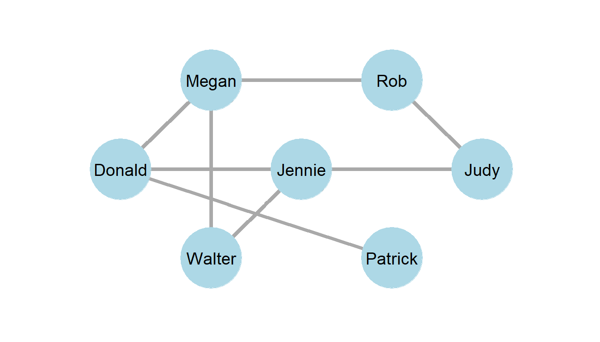
O professor dessa disciplina, que é muito querido pelos alunos, deseja saber quão distantes são os amigos, a fim de estreitar as relações. Para isso, vamos utilizar o algoritmo de Floyd-Warshall para calcular a matriz de distâncias entre todos os pares de amigos.
Quais são as dimensões da matriz? Desenhe ela na PRIMEIRA iteração do algoritmo, e no FINAL da última iteração. Use o código que você criou!
Gabarito
A matriz tem dimensionalidade 7x7, pois existem 7 vértices.
Após a primeira iteração, a matriz é a mesma da matriz de adjacência:


 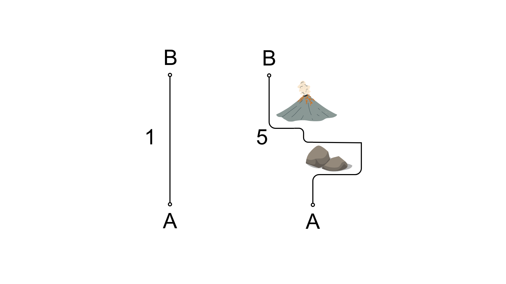
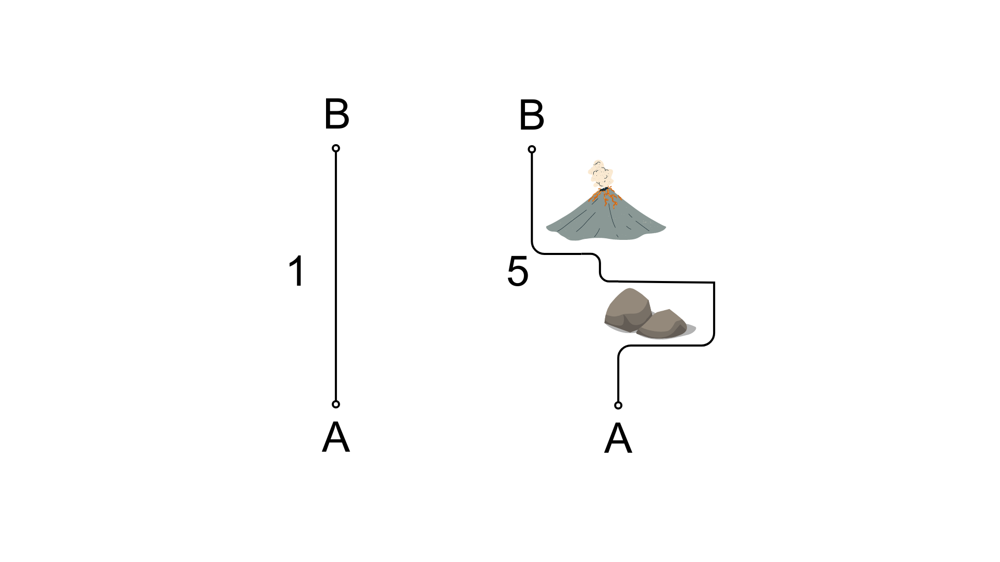


 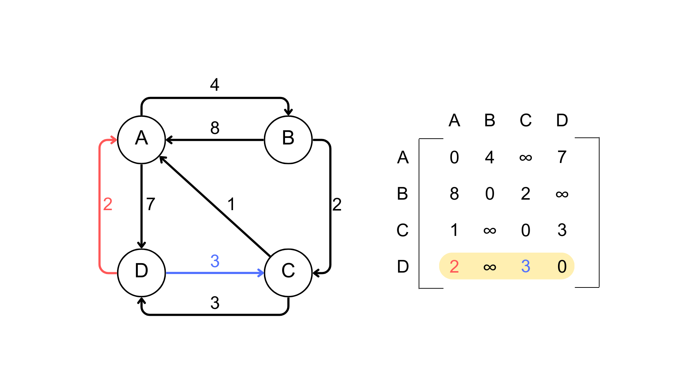
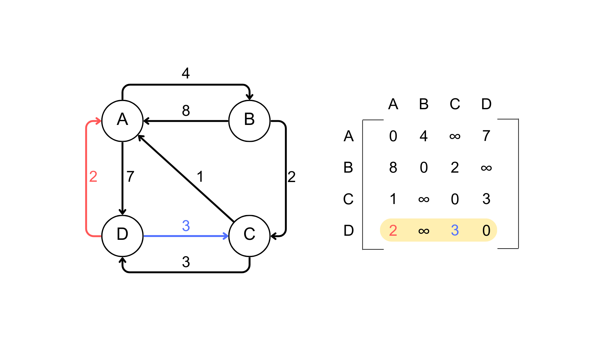


 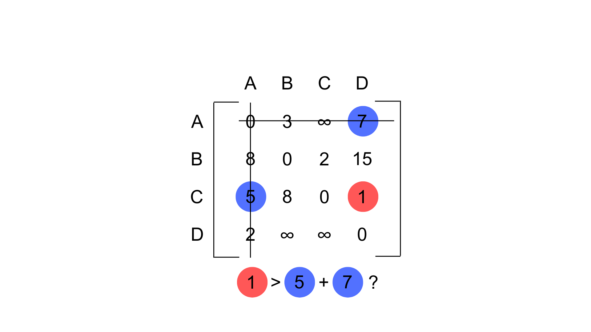
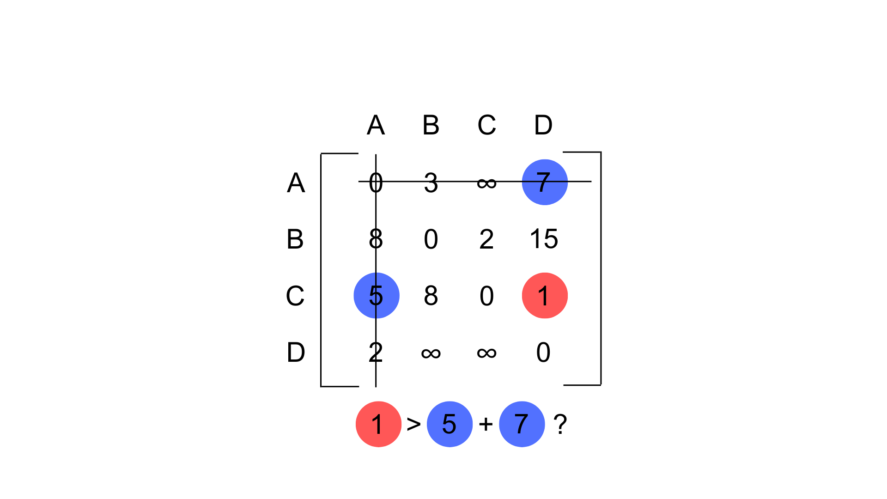